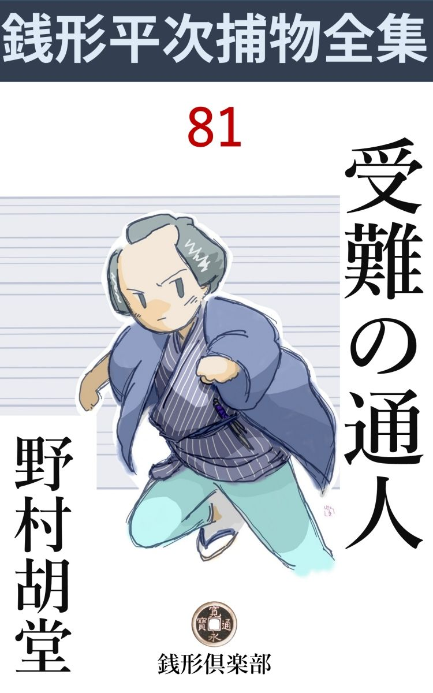
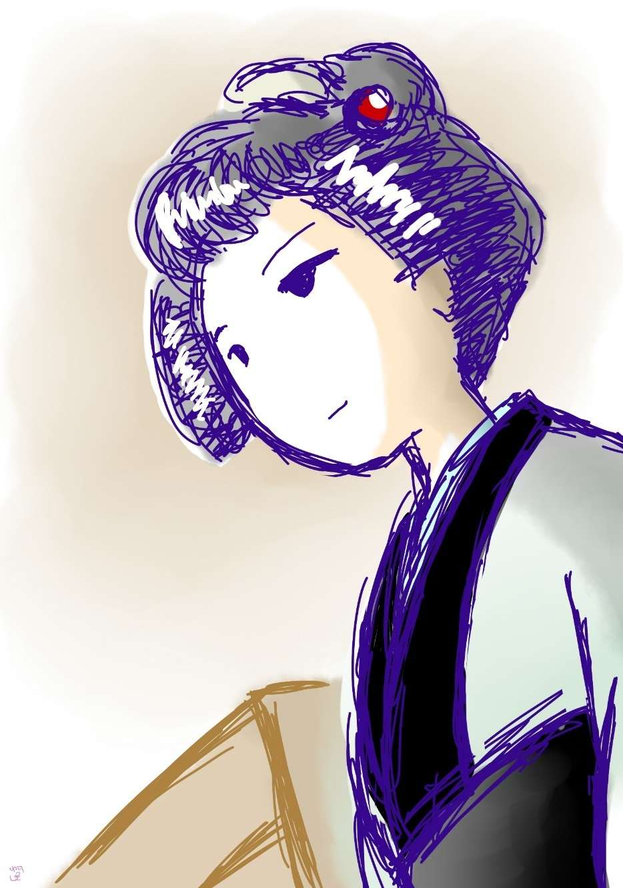

| 受難の通人: 銭形平次捕物全集第81話 (銭形倶楽部) | |
| 野村胡堂 | |
| ZENIGATA CLUB (2018) | |

一
銭形平次が関係した捕物の中にも、こんなに用意周到で、冷 酷 無 慙 なのは類のないことでした。
元鳥越の大地主、丸屋源吉の女房、お雪というのが毒死したという訴 えのあったのは、ある秋の日の夕方、係り同心漆戸 忠内の指図で、平次と八五郎が飛んで行ったのは、その日も暮れて街へはもう灯 の入る時分でした。
「へエー、御苦労様で------」
出迎えた番頭の総助の顔は真っ蒼。
「銭形の親分さんで、------飛んだお騒がせをいたします」
そう言う主人源吉の顔にも生きた色がありません。
「皆んな蒼い顔をしているようだが、どうした事だい」
平次は単刀直入に訊きました。
「皆んなやられましたよ、親分さん、運悪く死んだのは平常の身体でなかった家内一人だけで」
主人源吉の頬のあたりに、皮肉な苦笑が歪 んだままにコビリ附きます。
「フーム、一家皆殺しをやりかけた奴があると言うのだな」
「へエ------」
主人と番頭は顔を見合せました。
「そいつは容易ならぬ事だ、詳 しく聞かして貰おうか」
平次も事の重大さに、思わず四方を見廻しました。気のせいか、家中のものが皆なソワソワして、厄病神 の宿のように、どの顔もどの顔も真っ蒼です。
「今朝の味噌 汁 が悪うございました。飯にも香の物にも仔 細 はなかった様子で、味噌汁を食わないものは何ともございませんが------」
「味噌汁の中毒というのは聞いたことがないな、------まア、その先を」
平次は不審の眉を顰 めながらも、主人の言葉の先を促しました。
「朝飯が済んで間もなく、皆んな苦しみ出しました。------散々吐 くのでございます。ちょうど、霍 乱 か何かのような、一時は臓 腑 まで吐くんじゃないかと思いました。が、それでもうんと吐いたのは容態が軽い方で、あまり吐かない女どもは重うございました」
「女ども？」
「死んだ家内と下女のお越 でございます」
「で？」
平次はその先を促します。
「町内の本道、全龍 さんを呼んで、お手当をしてもらい、昼頃までには、どうやらこうやら皆んな人心地がつきましたが、昼過になって、つわりで寝 んでいた家内がブリ返し、一刻 ばかり苦しんで、とうとう------」
主人の源吉はさすがに眼を落します。
「それは気の毒な」
「昼頃いちど元気になって、この分なら大丈夫と思っていただけに諦 めがつきません。どうか、親分さん、この敵を討ってやって下さい」
この春祝言したばかりの、恋女房お雪に死なれて、丸屋の源吉は少し取りのぼせて居りました。
「ともかく、御新造の様子を見たいが------」
「へエ、どうぞ」
源吉は不承不承に案内してくれます。恋女房のもがき死にに死んだ遺 骸 を、あまり他人の眼に触れさせたくなかったのでしょう。
大地主と言っても、しもたや暮しで、そんなに大きな構 ではありません。元鳥越町の甚 内 橋 袂 に、角倉のある二階建、せいぜい間数は六つ七つ、庭の広いのと、洒 落 た離室のあるのと、木口の良いのが自慢------といった家です。
主人の源吉は三十そこそこ、歌舞伎役者にもないといわれた男振りと、蔵前の大通達を圧倒する派手好きで、その頃江戸中に響いた伊 達 者 でした。小唄、三味線、雑 俳 、楊弓 、香道から碁 将棋 まで、何一つ暗からぬ才 人 で、五年前先代から身上を譲られた時は、あの粋 様 では丸屋の大身代も三年とは保 つまいと言われたのを、不思議に減らしもせず、あべこべに殖 やして行って、世間をアッと言わせました。
その算盤 を預ったのは番頭の総助、四十前後の中年者で、丸屋の身代を貧乏揺ぎもさせないのは、この地味な忠義者の手柄のように、世間では噂しております。
二
奥の一と間には、嫁のお雪の死骸が、まだ蒲団の上に転がされたままになって居りました。あまりの事に顚 倒 したのと、一家中毒の半病人揃いだったので、誰も死骸を屏風 で囲 うことさえ忘れたのでしょう。
三十四五の女が一人、机を持って来たり、線香を立てたり、時々はそっと涙を拭いながら、まめまめしく立働いて居りました。
「あれは？」
眼顔で訊ねる平次に、
「下女のお越 ですよ、十七年もここに奉公して居りますが」
主人の源吉は弁護がましく斯う言います。
「------」
振り返って目礼したお越の顔を見て、平次も成程と思いました。足が少し悪い上に、半面の大 火傷 で、左の眉も、左の眼も滅茶滅茶、眼鼻立はそんなに悪くないのですが、これでは嫁の口も覚 束 なかったでしょう。十七年奉公する気になったのも無理のない事です。
平次は仏様を片手拝みに、そっと膝行 寄って、顔へかけた手拭を取りました。
「フーム」
凄まじい形相ですが、美しさは一入 で、鉛色に変った喉から胸へ、紫の斑 点 のあるのは、平次が幾度も見ている、『岩見 銀山鼠取り』の中毒です。
徳川時代の犯罪には、岩見銀山は附きものでした。斑猫 や鴆 毒 は容易に素人の手に入らず、山野の毒草は江戸の町では得難く、中毒死というと、一番先に考えられるのは、この岩見銀山でした。
「岩見銀山があるだろうな」
平次は顔を挙げて、主人源吉の表情を追いました。
「ヘエ、それがその、お越、お前は知って居るだろうな」
照れかくしらしく、下女の顔を見やります。
「ハイ、あの、あんまり鼠がひどいんで、お松さんにお願いして買って頂きました」
お越は物を隠そうとする様子もありません。それほど無 技 巧 に、忠実に使い馴らされたのでしょう。
「お松さんというのは？」
平次は言葉を挾 みました。
「私の妹でございます。一度縁付いて、不縁になって帰って来たっ切り、この七年間、世帯の切盛りをしてくれていますが------」
主人は何となく妹の方へ疑いの行くのを好まない様子です。
「何処へその岩見銀山を置いたんだ」
平次の問 は委細 構わずお越に突っ込んで行きました。
「人が触ったり、間違って食物 に入ったりしては悪いと思って、お勝手の戸棚の上へ置きましたが」
「持って来て見せてくれ」
「ハイ」
お越は立ち去りました。その少し跛足 を引く後姿を見送って、
「あの女は信用していいだろうな、御主人」
平次は問いました。
「十七年の間に一つも後暗いことのなかった女です。------今時、あんな奉公人はございません」
「そうらしいな」
そう言いながらうなずく平次の眼には、満足らしい輝きがありました。
しばらくは言葉が途切れて、お勝手の方の人声が、ザワザワと聞えます。妙に押し付けられたような、不安と恐怖 を孕 んだ声です。
「どうしましょう、岩見銀山は見えませんよ、旦那様」
お越は飛んで来ました。肝心 の平次には眼もくれずに、主人の源吉に訴える眼 差 です。
「何うしたんだ、誰が盗 ったんだ」
源吉もひどくあわてました。
「私が隠して置いた戸棚の上にはございません」
「お前が隠し場所を間違えるような事はあるまいな」
「いえ、そんな事はありません、他の物と違って」
「その隠し場所を知ってるのは、お前だけか。他に、誰か知って居る者はないか」
平次は口を容 れました。
「------」
お越はギョッとした様子でふり返りましたが、すぐ激しく首を振って、
「誰も、誰も知ってる筈はございません。私が隠したんですから」
「疑いはお前にかかるが、それでも構わないのだな」
「構いません、え、少しも構いませんとも」
お越の声は激情に上ずります。焼 痕 のない方の半面はカッと血に燃えて、どんな犠牲でも忍びそうな、この女の馬鹿正直さが、人を圧倒するのでした。
「味 噌 汁 を食わない者は何ともなかったというが、誰がいったい味噌汁を食わなかったんだ」
平次の問いは核心 に触れます。
「それは------あの」
主人の源吉は思わず言葉を滑らして、ギョッとした様子で口を緘 みました。
「旦那様」
お越は、飛びかかって、主人の口を塞 ぎそうな気組でした。
「飯 や香の物には仔細 はなかったそうだ、------これは御主人の言ったことだ。飯や香の物だけを食って、味噌汁を食わないのは誰だい」
「------」
「この家の中に、岩見銀山の中毒にかからなかったのが一人ある筈だ、そいつは誰だい」
「------」
ワナワナと動く主人源吉の唇を、お越は必死の目くばせで封じている様子です。
「八、店かお勝手へ行って、家中の者で、毒に中らなかったのは誰か訊いて来てくれ」
平次は事面倒と見て、八五郎を動員しかけたのでした。
「へエ」
立上がる八五郎、------が、その身体が部屋の外へ出るのを、外から押し戻すように、
「申しましょう、味噌汁の毒に中 らなかったのは、この私でございましたよ」
そう言って入って来たのは、二十七八の年増、まだ美しくも若くもあるのを、自 棄 に汚 な作りにしたような、白粉っ気のない女でした。
三
「お前は」
おどろき騒ぐ源吉の前へ、女は静かな顔を挙げました。『男まさり』という型 の、水のような冷たい表情です。
「構いませんよ、兄さん、本当の事をはっきり言った方が、物事が早く片附くでしょう、ね、親分さん」
女は半分平次へかけて言って、僅かに頰を綻 ろばせます。
「お前は？」
「主人の妹------松と申しますよ。今朝は御近所の方と、観音様へ朝詣りをする約束で、その方が誘 って下すった時は、生憎御飯は出来て居りましたが、おみおつけ が仕掛けたばかりだったので、お茶漬にして、お香の物で済ませて飛出しましたよ。お蔭で味噌汁には中 りませんが、嫂殺 しの疑いを受けるわけですね」
お松はそんな事を言って、ツケツケと平次を見上げるのでした。冷たい聰明な眼 差 です。

「そんな事を言って、お前」
おどろく源吉、威猛高 に妹をきめ付けようとしましたが、お松はそんな事には馴らされていない様子で、なかなか引込みそうもありません。
「------その上、お越 が岩見銀山を隠しておいた場所も、この私だけは知ってましたよ」
「まア、お松さん」
お越は飛付きました。が、さすがに口を塞 ぎもならず、お松の袂 をグイグイと引くばかりです。
「放って置いておくれ、------私は物を隠してビクビクして居ることなんか大嫌いなんだから」
お松は併し、そんな手 緩 い事には牽制 されそうもありません。
「私も申し上げて宜しゅうございましょうか、旦那」
番頭の総助は後ろからそっと主人の顔をのぞきました。
「何だい、何か知って居ることでもあるのかい」
平次がそれを横合から引取ります。
「他じゃございませんが------岩見銀山を戸棚の上に隠してあったことなら、この私も存じております、へエ------」
「何だ、そんな事か」
主人の源吉、事もなげですが、お松とお越の顔には何やら疑惑の色が浮びます。
「これから、一人一人に内々で訊 きたい。まずお越だけ、お勝手へ来て貰いたいが」
「ハイ」
平次は先に立ってお勝手に入って行きました。続く、お越、ガラッ八。
「さア、少しお白洲 めくが、正直に言ってくれ、嘘を吐 くと為にならないよ」
「ハイ」
平次は二本燈心の行燈を引寄せて、踏台 の上に腰を掛けました。広々としたお勝手は念入りに磨 き抜かれて、塵 一つない有様、十七年間忠勤を擢 んでたという、お越の働き振りが思いやられます。
「お勝手はお前一人か」
「もう一人お富さんという御飯 炊 が居りますが、父親が病気で三日ばかり前から葛 飾 の在所へ帰っております」
「一人では骨が折れるだろうな」
「いえ」
お越は、いつもの習慣で、巧 みに焼痕のない方の半面を見せて、慎ましく板の間に坐っております。後に突っ立ったのはガラッ八、長い影が、ユラユラと戸棚に揺れるのも、少しばかり怪奇な趣 でした。
「お前の生れは？」
「房州でございます」
「親兄弟はあるのか」
「兄夫婦が百姓をして居りますが------」
余り事件と縁のない訊問 に、お越は不審の眉を挙げました。
「この家の人達はどうだ、目立って仲の悪いのはないか」
「いえ、------皆んな良い方ばかりで」
「亡くなった新造は、主人の望 で、大層な支度金を出して貰ったという話だったが------」
それは神田から下谷浅草かけて、誰知らぬ者もない評判でした。きりょう 好みの源吉が、飾屋 の小町娘を、金に飽かして申受けたという経 緯 、------半年ほど前に、幾つのゴシップを飛ばしたことでしょう。
「でも良い方でございました。------気前の良い」
お越は給金でも増してもらった様子です。
「嫂 とお松さんとの仲は？」
「そんなに悪くはございません、------お松さんはあの通りで、世間の小姑 とは気風が違いますから」
「もう一つ訊くが、------番頭さんは、お松さんをどう思って居るのだ、先刻は変に庇 っていたが」
「私には何にもわかりませんが------」
「よし、よし。次はお松さんを此処へ呼んでくれ、------それから、岩見銀山の鼠取りを隠して置いたのは、この戸棚の上だな」
平次は、ガラッ八の後ろの古い戸棚を指さしました。
「え、その小さいお重の中へ入れて置いたのです」
「よし、それでいい」
平次はお越 の後姿が廊下に消えると、踏台を戸棚の前に持って行き、硫黄 附 木 を一枚灯 して、念入りに戸棚の上を調べ始めました。戸棚の上には、蓋 の無い古お重が一つ、その外側には、たった一カ所指の跡が附いておりますが、不思議なことに、お重箱の中には一面に埃 が附いて、今朝まで物を入れて居た跡などはなかったのです。
「八、これを見ておけ、------お重の中は一面の埃だ、------お越がこの中へ岩見銀山を隠したと言うのが嘘か、でなきゃ、曲者はずっと前にこの中から取出したのだ」
平次がそう言って踏台から下りると、主人の妹のお松が取済して入って来たのと一緒でした。
「まだ御用があるんですか、親分」
何か平 かでないものがあるのか、お松は突っ立ったままこう先手を打ちました。
「お松さん、お前さんは岩見銀山が戸棚の上にあるのを知ってると言ったが、ありゃ、お前さんの眼で見たのか、それとも------」
「お越から聞きましたよ、鼠捕りを買ってやると、------戸棚の上の重箱の中へ入れて置きますよ------と言ったんで、其処にあると思って居たんです」
「何時頃だ、それは？」
「五六日前ですよ」
「すると、岩見銀山を見たわけじゃないのだね」
「ええ------でもお越 なんか疑っちゃいけませんよ。お奉行所へそう申上げれば、あれは御褒美の出る奉公人ですよ」
お松は少し躍起 となります。
「お前は、嫁のお雪と仲がよくなかったそうだな」
平次はズバリと言い切りました。
「え、------あんな女はありゃしません。下品で、阿 婆 擦 れで、派手好きで、おしゃべりで、食い辛坊で------」
平次も少し呆 れました。まだ下手人の見当もつかないのに、この女は殺された嫂 の悪口を、何の遠慮もなく並べ立てるのです。
「悪口はそれ位でよかろう、もう生きちゃいないのだから。------ところで、番頭の総助はどうだ」
「ありゃ馬鹿ですよ、私をどうかするつもりで居るんでしょう、------あんな半間な庇い立てなんかして」
「少し手きびしいな」
平次は苦笑いに紛 らせました。
四
次は主人の弟吉三郎、二十五歳の冷飯食いで、家中の不人気と気むずかしさを、一人で引受けたような男でした。
「当り前ですよ。こんな事になるのは、半年も前から判り切って居ましたよ、兄貴のあの癖 が直らなきゃ------」
吉三郎はそう言ってプツリと口を緘 みました。松 皮 疱 瘡 でひどい大 菊石 、まだ若い盛りを何という醜 い顔でしょう。光源氏 のような兄の源吉とは、どう折合をつけて見ても、血を分けた兄弟とは思われません。
「癖？」
平次は何やら思い当った様子です。
「兄貴 と嫂 を怨む者は、町内だけでも五人や十人じゃありません、現 に------」
「現に？」
吉三郎の言葉は又プツリと切れます。
「言ってしまいましょう。隠して置いたって、誰かから親分の耳に入るに決ってまさア」
「------」
「お向うのお光さんなんざ半歳前嫂 が嫁に来た時は藁 人形 を持出す騒ぎをやりましたぜ。そいつを五寸釘で何処かの杉かなんかに打ち付けるつもりのを、町内の者に見付けられて------いや大変でしたよ」
「フーム」
平次も薄々それは聞いて居りました。飾屋のお雪が丸屋の嫁になるのが口 惜 しいと言って、元鳥越の丸屋からは、溝川一つ距 てた猿屋町の粉屋のお光が、白装束 を着て飛出したという話を------。
「こんな事になるのも、元々兄貴が浮気っぽいからでさ。ね、親分、三十になるまで、独身 が面白くてたまらない兄貴だったんですもの。家の者なんか捜 すより、外へ出て、町内の娘や後家をあさって御覧なさい。嫂のお雪さんに怨のあるのが、ざっと私が知って居るだけでも十人はありますぜ」
吉三郎の言葉は露骨な棘 を含 んでおりました。美貌の兄に対する憤 懣 と、抑圧された情欲のハケ口が、場所柄も何も考える遑 もなく、熟 れて潰 れた膿 汁 のように、果てしもなく噴出するのです。
「それで、お光が怪しいというのか」
平次は独り言のように呟 きました。この男の毒気に中てられて、さすが、探索の意気込も挫 けたのでしょう。
「怪しいのはお光ばかりじゃありません。女房を貰って三月経たない兄貴と変な噂を立てた、師匠のお角だって、白紙じゃありませんよ」
「師匠のお角？」
「猿屋町の小唄の師匠ですよ、お光の粉屋から一軒置いて隣の------」
この男の呪 いを聞いて居るのは、平次にも少し欝 陶 しいことでした。
「ところで、中毒を起したのは朝の味噌汁だ、------家の外の者が味噌汁へ細工をすることが出来るだろうか」
平次はこの男の呪いの口を閉 してやるつもりで、ツイこんな事を言ったのです。
「下女はお越一人切りでさ。お勝手元にばかり居たわけじゃないから、曲者は御用聞か何かの振をしてお勝手を覗き、仕掛けた味噌汁の鍋へ岩見銀山を投り込んで逃げ出すのはわけもない事じゃありませんか」
「真物 の御用聞に逢ったら？ 曲者はどうなるだろう」
「逢わなかったら？ どうです、親分」
この男の悪魔的な空想は、何処まで発展するかわかりません。
「ところが、この戸棚の上の岩見銀山が無くなって居るんだ。外から女が入って、踏台をして岩見銀山を取って、それを鍋へ投り込んで逃げ出したというのか」
平次は弁護側に廻ったような形勢です。
「なアに、お越が置き場所を忘れたんですよ。大体あの女は忙 し過ぎるんです、------曲者は別に岩見銀山を外から持って来たとしたら、辻 褄 は立派に合うでしょう、親分」
「------」
平次はその上相手にはなりませんでした。頤 をしゃくって、吉三郎を去らせたまま、踏台に腰をかけて何時までも考えて居ります。
「いやな野郎じゃありませんか、親分」
ガラッ八は後ろから平次をのぞきました。
「誰が？」
「あの弟野郎ですよ、------嫂 を殺したのは、ひょっとしたら、あの菊石 野郎じゃありませんか」
「嫂だけじゃないよ、毒は家中の者が呑まされたんだ」
「------」
ガラッ八は黙ってしまいました。これ以上は考えたところでガラッ八には判りそうもありません。
「親分さん」
不意に、お勝手の障子が開きました。
「何だ、お越 じゃないか、用事でもあるのか」
平次は踏台にかけたまま、グルリと向き直ります。
「一つだけ申し忘れましたが」
「何だい」
「御新造さんが昼頃になって、少し気分がよくなったが、喉が渇 いて仕様がないから、水が欲しいと仰しゃいました」
「フム」
「何しろ毒に中てられたのが五人もある騒ぎで、その時は誰も側に居てくれません、------私は這うようにしてお勝手へ参り、薬罐 と湯呑を持って来て、御新造さんに呑ませましたが------」
「お前は呑まなかったのか」
「湯呑が一つしかなかったので、私はもう一度お勝手へ行って、水 甕 からくんで呑みました。------二度お勝手へ行ったわけですが、水を呑んでから気分が清々して、御新造さんのところへ帰って来ると、------」
「------」
「七転八倒の苦しみでございました。びっくりして大声を出すと、たった一人御無事なお松さんと、旦那様のお手当をしていなすった、本道の全龍さんが飛んで来て介 抱 して下さいました」
「お松さんと全龍さんは一緒に駈け付けたのか」
「いえ、お松さんの方が先で------」
「それから」
お越の話に、何やら重大さが匂うのでしょう、銭形平次は少し夢中になって、踏台から乗出しました。
「それっ切りでございます」
お越の顔は------今朝の中毒のせいか、まだ真っ蒼です。
「まだ何んかあるだろう、------皆な言ってくれ、大事なことだ」
「いえ、もう何んにもございません」
「その薬罐 は何処へやった、奥にも此処にも見えないようだが------」
平次は四方 をキョロキョロ見廻しました。
「その後で旦那様が、その水を呑もうとなすったので、私がお止めしました」
「それはよかった」
「また誰か呑んでも悪いと思って、皆な流しへ捨てて薬罐はよく洗って戸棚に仕舞い込んでしまいました」
「何という馬鹿なことするのだ、仕様がないなア」
平次はそう言いながら、水下駄を突っかけて流しの外を見廻りました。
「親分、毒はとうに流れましたぜ」
少し茶化し気味のガラッ八の顔がそれを覗いて居ります。
「だがな、八、下水の中に、蚯蚓 がうんと死んでいるぜ、------こいつは見ておく値打はあるだろう」
平次はそう言って、虫唾 の走るような顔をお勝手に戻しました。
五
丸屋の嫁お雪を殺した下手人は、秋酣 になっても見当が付きません。疑えば、夫の源吉も、小姑 のお松も、弟の吉三郎も、下女のお越も、番頭の総助も、猿屋町の粉屋のお光も、小唄の師匠のお角も、悉 く殺すだけの動機と機会とを持って居るわけですが、疑わないとなれば、岩見銀山が偶 然 に味噌汁の中へ落ちたとしても済まないことはありません。
銭形平次もことごとく閉口しました。係同心漆戸 忠内は、三輪 の万七に、主人妹お松を縛らせましたが、これは本当に奉行所への申訳だけのことで、一と月経たないうちに、そっと許して帰すより外に手段もない始末だったのです。
「どうした事だ、丸屋の中毒騒ぎは？ やはり鼠のせいかな」
与力笹野新三郎は、時折平次にそんな事を言いますが、
「鼠じゃございませんが、あの下手人は、私などより、余っ程知恵がありますよ」
平次も頭を掻いて引下がる外はなかったのです。
そのうちに、猿屋町の小唄の師匠お角が、大びらに丸屋の源吉に囲 われることになりました。女房が死んで百カ日も営 まないうちに、後添の話でもあるまいと言うのと、お角には先の亭主の子で、四つになる幸三郎という伜があるので、いずれ年でも明けたら、幸三郎を里にやって、丸屋の後添に納まるだろう------というのが、界隈の噂でした。
お角は二十四五の年増盛り、柳橋に左褄 を取っている頃から、江戸中の評判になった女で、その濃 婉 さは滴 るばかりでした。源吉は死んだ恋女房のことも忘れ、通と意気との見栄も捨てて、ただもう愚に返ったように、日が暮れるのを合図に、猿屋町に入り浸 りました。
川一と筋距 てての狂態を見兼ねたのと、近所中の噂に閉口して、妹のお松はたびたび苦いことを言いますが、源吉は耳を傾 けようともしません。近頃はお角の弟子達を全部断って、肌寒くなりまさる晩秋の一夕を、長火鉢を挾んで口 説 の糸をたぐるのに余念もなかったのです。
お角は先月まで使っていた下女にも暇を出し、源吉との恋の遊 戯 を憚 りもなくつづけました。四つになる伜の幸三郎は、陽のあるうちは外 面 に追いやられ、日が暮れると、床の中に追い込まれてしまいます。
「おや？ 坊やは何処へ行ったかしら」
お角はフト、先刻から幸三郎が見えないことに気が付きました。陽のあるうちからの酒で、玉山まさに崩 れ了 んぬ狂態、源吉の膝に片手を凭 れて、盃を斯 う斜 に捧げたまま、美しい瞳が、少し三白眼に据えられたのです。爛熟 し切った歓楽の底から、ホロ苦い母性が蘇 えったのでしょう。
「何処かその辺に居るだろうよ。馬も牛も通る場所じゃなし、それに、外はまだ薄明りがあるよ。さアその盃をあけるがよい」
源吉は銚子を取上げて、自分の胸のあたりに匂う女の額をのぞきました。
「でも、こんなに遅くまで外に居たことなんかないんですもの」
「心配することはないよ。子供は正直だ、暗くなれば帰って来るに決って居るさ」
「そうでしょうか、------」
切 りにこみ上げて来る不安と憂 欝 に、お角は思わず居ずまいを直しました。膝からともすれば襦 袢 がハミ出しますが、酣 酔 が水をブッかけられたように醒 めて、後から後から引っきりなしに身顫いが襲います。
ちょうどその時、幸三郎は、川岸 っぷちを、フラフラと歩いて居りました。子供心にも、源吉に白い眼で睨まれて、母親に床へ追いやられるのがイヤだったのでしょう、ツイ敷居を跨 ぎそびれた心持で、人通りもない川端を、甚内橋の上手の方へ、ヨチヨチと独り歩きをして居たのでした。
フト、四つの児にも不安の直感がありました。何うやら赤いものが、サッと襲って来たのです。
「あッ」
と言う間もありませんでした。宵闇の中を通り魔のように襲いかかったものが、幸三郎の小さい身体を、ドシンと力任せに突き飛ばしたのです。
子供の身体は毬 のように宙 を飛んで、甚内橋上手十間ばかりの川の中へ------。
それは実に一瞬の出来事で、誰も見た者もありません。
いや、たった一人、川の向岸、丸屋の裏木戸をあけて、ゴミを捨てに出たお越 が、夕闇の中に、ただならぬ悲鳴と、川に突飛ばされた子供の姿を宵闇の中に見たというのです。
お越は咄嗟 の間に石垣を駆 け降りて、そこに繋 いだ小舟に飛乗り、棹 を突っ立てて、浮きつ沈みつする子供に近づき、危いところで引上げました。
「誰か来て下さいよ」
思わず口から出たお越の叫び声を聞付けて、三人五人と岸へ立ちました。近所の家からは、手燭 や提灯を持って飛出す者もある騒ぎです。その灯の中へ救い上げた子供をつれて来ると、
「おや？ お師匠のところの幸三郎じゃないか」
多勢の顔には、驚きと非難と、そしてほのかな嘲笑 が浮んで来ます。この時、狭い川を隔 てて猿屋町のお角の家からは、三味線の音につれて、艶めかしい歌が漏 れて居たのです。
幸三郎が、お越始め町内の衆の介抱で、ようやく息を吹返した頃、お角はようやく事の始末を聞いて駆け付けました。
「坊や、お前はまア何だってあんな場所に居たんだい、------お母さんが、先刻から一所懸命捜して居たじゃないか」
お角は半狂乱の態 でした。襟も裾も乱れたまま、熟柿 臭い顔を、わが子の濡れた頬に持って行くのです。
（------三味線をひきながら捜 していたんだとよ、迷子の迷子の幸三郎やアい------なんてのはいい節廻しだぜ------）
後ろの方で、そんな事を言う者もありました。
「お母ちゃん、------坊は川へ突き落されたんだよ、ひとりで落ちたんじゃないよ------」
四つの早生れで、幸三郎は賢 い子でした。咄嗟 の間に自分が川に落ちた、因 果 関係を読んで居たのです。
「まア、この子は、何を言うんだえ、お前を川へ突き落すなんて、そんな鬼のような人があるものか------こんな可愛い児を」
お角は幸三郎のぐしょ濡れの身体を、自分の胸に抱きしめて、駄々っ児のように身を振りました。
「本当だよ、------赤いおべべを着た小母さんが突き飛ばしたよ」
「まア」
お角はゾッと身を顫わせます。
六
この事が平次の耳に入ったのは、それから四五日経ってからでした。
「それは本当の事かい、お角さん」
猿屋町の師匠の家へ、平次が自分でやって来て確 かめると、
「親分さん、怖 いことですが、幸三郎の言ったことに少しの嘘もありません、------その翌る日この格子から、硫黄 附 木 に消 炭 で書いた、こんな物を投込んだ者があります」
そう言ってお角の取出した一枚の附木に、恐ろしく下手な字で、『げんきちとてをきるか、いやならこんどはほんとにおまえのこをころすぞ』と斯う書いてあったのです。
「心当りは？」
平次は顔をあげました。
「十人位ありますよ、親分さん」
「まず第一に？」
「粉屋のお光」
お角の眼は口 惜 し涙にキラキラと光ります。
「それから？」
「丸屋の旦那の妹、------お松さん」
「少しおかしいな」
「私が乗込んで行けば、一文だってあの女の勝手にはさせませんよ」
「フーム」
「両国の水茶屋のお楽、------あの女も旦那に夢中なんです」
「それから？」
「とても数え切れるものじゃありません。ともかく、私は身を引きました。丸屋の後 添 になるのは本望ですが、伜 の命はそれよりも大事です。三日前に旦那とは手を切りましたよ、親分」
お角はそう言 ってサメザメと泣くのです。次の間ではあの晩から風 邪 を引いた幸三郎が、弱々しくも咳 き込んで居ります。
平次は暗い心持で甚内橋を渡りました。事件は女の嫉妬 か、女の嫉妬と見せかけた、恐ろしくタチの悪い男の毒計でしょう。
そのいずれにしても、平次にとっては、決して良い心持の捕物ではありません。
その足で丸屋へ行くと、主人源吉も、その事があってから、二三日は小さくなって引 籠 って居ります。
「親分、これは」
擽 ぐったい顔に迎えられて、平次は縁側へ腰をおろしました。
「誰も聞いちゃ居ないだろうな」
「皆んな店の方に居ますよ、どんな御用で？ 親分」
「その障子や唐紙 を皆んな開けて、縁側へ顔を貸して貰いましょうか、------実はね、丸屋さん、お前さんは女出入りの多い人だが、打ちあけたところ、本当に怨まれそうな筋は幾つあるんで？」
平次の問いは唐突 でした。
「そんなにありゃしませんよ、親分、世間の評判の方が大きいんで------」
源吉は照れ臭く額を叩きました。全く良い男には相違ありませんが、自負心が強大で、生 っ白 くて、平次が見ると、虫 唾 が走りそうでなりません。
「だが、世間で気の付かない、言うに言われない引っ掛りのがあるだろう。少し押付けがましいが、これへ心当りの女の名前を書いて貰いましょうか、------商売人は別だぜ」
平次は硯箱 と巻紙を引寄せました。
「親分さん、本当のところ、人間はそんなに浮気が出来るものじゃありません。商売人を除 けると、幾人もありゃしません。世間の評判が大きくなると、恥かしい事ですが、私もツイ自慢たらしく見せかけてやりたくなるまでの話で、いざとなると、皆んな向うから逃げてしまいます」
源吉はすっかり恐れ入って居ります。事実伊達 者 、通 、粋 といわれる人達の内部生活が、思いの外に貧しいのを、平次はマザマザと見せ付けられたような気がして、これ以上追及する気もなくなってしまいました。
「お角は子供の命に見返したそうだが、外に私の知ってるだけでは粉屋のお光、水茶屋のお楽------」
「そんなところですよ、親分、後生だから、勘弁して下さい」
「他 にうんと怨まれる筋はないだろうな、御主人」
「あるわけは無いじゃありませんか」
大汗になって弁解する源吉を、平次は浅ましくも憐 れに見て、それっ切り引揚げてしまったのです。
が、事件はこれでお仕舞になったわけではありません。その歳の暮には、源吉がせっせと通い出した、両国のお楽の水茶屋が、原因も判らず焼けてしまったのでした。
「親分、余っ程変ですぜ。丸屋の嫁を殺して、幸三郎を川へ投込み、お楽の茶屋へ火をつけた下手人は、鼻の先で笑ってるじゃありませんか。何だって遊ばして置くんで」
ガラッ八の八五郎までがこんな事を言いますが、平次は容易に腰を切ろうともしません。
「八、曲者があんまり素直過ぎるんだ。証拠があり過ぎて、縛 れないよ。ところで、頼んでおいたものを集めて置いたかい」
「骨を折ったぜ、親分。お松と、お楽と、お角と、お光と、------これは女の筆蹟 だ。次は吉三郎と、総助と、主人の源吉、------とこれが男の筆蹟 だ」
ガラッ八は帳面、巻紙、小菊、浅草紙、いろいろの紙に書いたものを並べました。
「男三人は相当に書けるが、女四人はお松の外は皆な下 手 っ糞 だな」
「このうちに附 木 の字に似たのはありませんか」
「無い、一つも無い。附木の字はもっと下手だ」
「わざと下手っ糞に書いたんじゃありませんか」
「多分そんな事だろう。------ところで、もう一人頼んだのがある筈だが、------女は五人だぜ、八」
「下女のお越 は一文不通ですよ、いろは のいの字も書けやしません。------字は知ってるか------というと、馬鹿にしちゃいけない、これでも知って居るというから、書かせて見ると、一二三の一の字が一つだけ。------これでも知ってるに違いあるまい、一の字は一本、二の字は二本、五の字は五本で十の字は十本引くんだろうってやがる。------それじゃ万の字を書くには小半日かかるぜと言うと、半日かかったって一日かかったって、おれの知ったことじゃない。村の庄屋の御隠居は三年も五年も書いていたが、あれは多分億 という字だろう------って」
「ハッハッ、こいつは手前 の負だ。お越の方が役者が上だよ」
平次はカラカラと笑いました。
七
翌る年の二月、丸屋の主人源吉は、親類縁者------わけても妹のお松の反対を押切って、両国の水茶屋の女、お楽を二度目の女房に迎えることになりました。
世間の噂をはばかって、祝言は極く極く内輪に、三々九度の盃事も形ばかり、『高砂や』を謳 い納めて、お開きになったのは宵のうち、花嫁のお楽が、仲 人 にみちびかれて、離室の寝室に入ったのは、まだ亥 刻 半そこそこでした。
母屋 にはいろいろの不祥 なことがあったので、新夫婦の部屋を、離室 に定めたのは、主人源吉の心尽しでしょう。
その離室から、子刻 過ぎになって、思いも寄らぬ火事が起ったのです。
「それッ」
と母屋に待機していた若い衆、町内の鳶 の者が、揉み消すように消してしまいましたが、離室に寝て居た筈の、主人源吉と、花嫁のお楽の姿は見えません。
「旦那、旦那ッ」
おどろき騒ぐ人々の中へ、ヌッと顔を出したのは、銭形の平次でした。
「皆の衆、騒ぐことはない、主人も花嫁も無事だ。母屋の方に寝 んで居るよ。ここに泊ったのはこの私と八五郎だ。私は主人に化けたから無事だったが、八五郎の女形は骨が折れたぜ」
平次は灯 の中に突っ立って、こんな暢気 なことを言って居るのです。
ガラッ八の八五郎は、女形の装束 を脱いで、コソコソと人ごみの後に姿を隠しました。顔を見られるのが恥かしかったのでしょう。
「ところで、私と八五郎がここに泊ったのは、曲者の仕掛けるのを待つためだ。先の新造のお雪さんを殺し、お角の伜幸三郎を川へ投げ込み、今度は花嫁お楽さんの家へ火をつけた曲者は、今晩はこの離室へ火をつけたのだ」
平次の言葉は続きます。
離室の前に集まった二三十人の群衆は、声を呑んでその次の言葉を待ちました。
「曲者の姿はたしかにこの眼で見た。火を附けるところを節穴 から覗いたんだから、間違いのある筈はない」
「親分、その曲者は誰だ。早く言って下さい」
群衆は異常な圧迫感 にたえ兼ねて、ザワザワと揺れます。
「そこに居るよ、誰にも解る筈だ。------手の真っ黒なのが証拠だ」
平次に指さされて、ハッとした一人、思わず自分の掌 を見たのを、
「あッ」
後ろから無 図 とガラッ八が襟首を摑んだのです。
「太え阿 魔 だ。神妙にせい」
ガラッ八の手の中に、一と握りになったのは、見る影もない女、跛足 の大 焼 痕 の、あの下女のお越 だったのです。
「八、油断するなッ」
平次が叫ぶ間もありません、お越はガラッ八の油断を見すまして、その手はパッと払いました。たじろぐ隙 に摺り抜けると、群衆を縫って、バラバラと母屋の二階へ------。
「寄るな寄るなッ」
お越は絹を裂 くような叱咤 と共に、二階の奥の一と間、有明の光のほのかに揺れる障子をパッと、蹴 開 けたのです。
「旦那様、お怨 み申します」
「あれッ」
紅 を乱して、花嫁のお楽は飛出しました。それを追うのは、何時、何処で手に入れたか、出 刃 庖丁 を振りかざしたお越。
庭も家の中も、唯人間が渦を巻く大混乱です。
「お越ッ、執念 が過ぎるぞッ」
平次の叱咤とともに、得意の投げ銭が夜風をきりました。
「あッ」
肘 を打たれて、思わず庖丁を取落したお越、次の瞬間には、ガラッ八の我武者羅な膝 の下に組敷かれておりました。
「旦那様、お怨み申しますよ、旦那様」
きりきりと縛り上げられながら、お越は、半面焼痕 の顔をあげて、二階を睨み上げながら、忿怒の声を歇 めなかったのです。
「八、早く、猿轡 をッ」
平次が声をかける間もありませんでした。お越の口からはタラタラと血潮が、------振り仰いで、灯の中に源吉を求むる顔の凄さ、群衆は悉 く色を失いました。お越は観念して自分の舌を噛み切ったのです。
源吉は物蔭に隠れて、ワナワナと顫えました。たった一夜の、かりそめの戯 言 が、人間幾人の命を棒に振って、こんな恐ろしい破局 にまで導 いてしまったのです。
× ×
「八、いやな捕物だったな」
この事件がすっかり片附いてから、早春の日向をなつかしみながら、平次はつくづく述懐 しました。
「親分は最初 っからお越 の仕業と解ったんですか」
とガラッ八。
「いや、少しも解らなかったよ。どんなに巧 んだ悪事よりも、少しも巧まない悪事の方が解り難い。------お越は最初から投げてかかったんだ。岩見銀山を隠していたのも自分、お雪に二度目の毒の入った水を呑ませたのも自分と、白状して居るだけに疑いようはなかった」
「へエ------」
「戸棚の上の重箱の中へ、岩見銀山を入れた様子のないのを見て少し変だと思ったよ。四五日前に岩見銀山を入れたなら、埃 に形が付かない筈はない。あれほど賢い女が物忘れする筈はないから、------これはヒョッとしたら最初から岩見銀山を懐へ入れて、折を覗っていたんではあるまいかと思った、それが最初の疑いさ。------吉三郎とお松はツンツンして居たが、最初から疑いもしなかったよ。主人はお越を庇 って居たが、あれに気のつかなかったのは、俺の大手ぬかりさ」
「------」
「幸三郎を川へ突飛ばした時は、お越も細工がうまくなって居た。赤い着物を羽織って、お光かお楽の風をし、子供を突飛ばして甚 内 橋 を渡って此方の岸へ帰った。------其処までは何でもないが、------子供を川に突落したのは、さすがに心がとがめて、急に舟を出して救う気になった。------これは、お越の気性ではありそうなことだ、あの女は根が悪人じゃなかったから。------あの晩は雨模様で、六つ半というと恐ろしく暗かった。川の向う岸の水音を聞いただけで、舟を出すような晩ではなかったし、川の中の子供を何の苦もなく救い上げたくせに、突き飛ばして甚内橋を渡って此方へ逃げて来た人間を見ないのはおかしい」
「------」
「あの時は、お越を挙 げようかと思ったが、どうも証拠がアヤフヤだ。附 木 に書いた下手な字も、お越は全くの明 文盲 のふりをして居たので、手のつけようがなかった。奉公人下女端女 は、なまじっか字なんか知って居ると、主人や朋 輩 にイヤがられるという事に気のついたのは、ずっと後の事だ」
「なる程ね」
ガラッ八は感にたえました。
「ところで、男のためにあれほどの事をするには、お越はあんまり不容貌過ぎた。まさか美男の源吉が人 三 化 七 のお越に手を出そうとは思わなかったよ。多分、浮気者の源吉が、ほんの出来心で、たった一度ふざけたのだろうが、醜 女 のお越にとっては、命がけの事だった。歌舞伎役者にもないと言われた美男の主人を、他の女に取られる口惜しさで、お越の心は鬼のようになって居た」
「------」
「源吉はお越を見くびって居たので、疑う気にもならなかった。------尤も後で、お越ではないかしらと気が付いたらしいが、大通を気取っている源吉は、あの見る影もない下女に手を付けたとは自分の口から言えなかった」
「へエ------」
「源吉は面目のために黙って居たし、お越はそれに思い知らせるために幾人でも殺す気になった」
「------」
「八、気をつけるがいい。正直な女はこの世の宝だが、いちど騙 すと怖 いよ」
「ね、親分」
ガラッ八はしんみりしました。
「何だ」
「源吉は憎いじゃありませんか」
「女を撫斬 にするのを、美男で大通の自分の役得のように思って居たのだよ。あれは本当のところは男の屑さ、大 焼痕 の下女に追い廻されりゃ世話はない」
「お越は？」
「悪い事をしたには相違ないが、可哀想だよ。------手前 も縄をかけた因 縁 があるから、思い出したら念仏でも称 えてやれ」
「------」
ガラッ八は黙りこくってしまいました。妙に心淋しい日でした。
（編注）
作品中には、身体の障害や人権にかかわる、差別的な語句や表現が見られますが、本書が成立した当時の時代背景等が現代とは異なる古典的な文学作品でもあり、著者が故人でもありますので、底本のままとしました。ご理解、ご諒承のほどをお願い申し上げます。
著者---野村胡堂
挿絵---萩 柚月 © 2017
初出---「オール讀物」昭和十三年十月号 文藝春秋社
底本---「錢形平次捕物全集」第四巻 河出書房 昭和三十一年六月三十日初版
編集・発行 銭形倶楽部